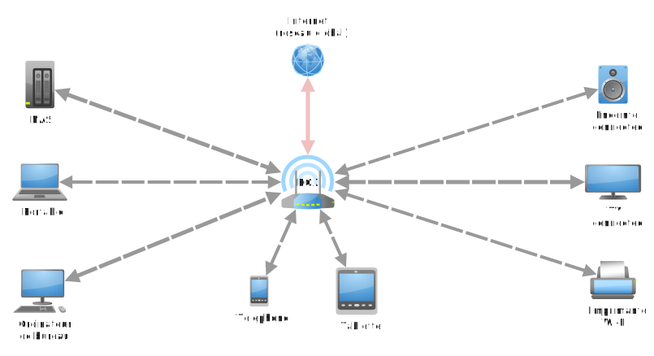

Le réseau local⚓︎
 Un réseau local, ou LAN (Local Area Network) est de taille modeste. Les équipements qui y sont connectés s'envoient des données entre eux sans passer par internet. Un bon exemple de LAN est le réseau domestique d'une maison :
- la box, fournie par l'opérateur (Orange, Free, Bouygues...) fait office de switch et de routeur;
- les téléphones portables, tablettes, ordinateurs, imprimantes et autres s'y intègrent.
Les adresses IP privées et publiques⚓︎
On a vu dans le chapitre précédent l'importance de l'adresse IP d'un ordinateur dans le rôle de la communication.
Définition : Adresse IP
Une adresse IP (version 4) est la donnée de 4 octets. On les note séparés par des points.
Il y a 5 classes d'adresse IP, notées A, B, C, D et E et les 3 premières classes disposent d'adresses IP (on abrègera en IP) publiques et privées.
Voici des exemples:
- 74.125.21.138 est à ce jour une IP permettant d'accéder au site du moteur de recherche de Google. C'est une IP publique, accessible par tout le monde via Internet.
- 192.168.1.47 est l'IP de l'ordinateur sur lequel j'écris ces lignes. C'est une IP privée : elle n'est accessible que par les ordinateurs de mon propre réseau domestique. Elle n'est d'ailleurs pas unique non plus dans le sens où d'autre réseaux domestiques utilisent cette IP.
- lorsque je veux voir mon IP publique, je vais par exemple consulter ce site et je trouve une adresse différente : 90.59.223.xxx (permettez moi de garder mon adresse IP secrète).
Une adresse IP publique, c'est un peu comme une adresse postale publique : elle identifie de manière unique une machine (qui peut être une box jouant le rôle de routeur vers un réseau domestique).
Dans un réseau local, une adresse privée, c'est un peu comme dans une ville, le numéro et le nom de la rue (sans la ville ni le pays) : il y a sans doute beaucoup d'adresses qui commencent par « 24 rue des oliviers ». Si le réseau postal ne concerne que la ville de Rennes, cette adresse est suffisante, mais si je cherche à envoyer du courrier au 24 rue des oliviers sans préciser la ville, cela ne marchera pas.
Remarque
4 octets pour une adresse IP, c'était bien il y a 30 ans, ça l'est beaucoup moins de nos jours !
\(2^{32}=\)4 294 967 296, donc vu le nombre de machines croissant en fonctionnement simultané sur Terre, il est impossible d'attribuer une IP unique à chaque ordinateur connecté à Internet, d'où l'importance du LAN.
Pour pallier le problème, une norme IP version 6, plus performante, sur 128 bits au lieu de 32, a vu le jour mais peine encore à s'imposer.
Voici les plages d'IP et d'IP privées selon les classes :
-
Classe A : de l’adresse IP 0.0.0.0 à 126.255.255.255.
Adresses privées : de 10.0.0.0 à 10.255.255.255 (avec 16 millions d’adresses possibles au sein d'un réseau local) -
Classe B : de l’adresse IP 128.0.0.0 à 191.255.255.255.
Adresses privées : 172.16.0.0 à 172.31.255.255 (avec 65535 adresses possibles au sein d'un réseau local) -
Classe C : de l’adresse IP 192.0.0.0 à 223.255.255.255
Adresses privées C : 192.168.1.0 à 192.168.255.255 (255 adresses possibles dans un réseau local) -
Classe D (réservée) : de l’adresse IP 224.0.0.0 à 239.255.255.255
Ces adresses sont réservées pour le multicast. -
Classe E (réservée) : de l’adresse IP 240.0.0.0 à 255.255.255.255
Ces adresses sont réservés par l'IANA
Mon adresse IP publique est une IP de classe A, mon IP privée est de taille C, ce que je comprends parfaitement puisque mon réseau domestique ne contiendra qu'une dizaine de terminaux tout au plus.
L'exemple du réseau local traditionnel⚓︎
Lorsqu'on met en place un réseau local, on commence par déterminer sa taille. Il y a beaucoup de chances qu'on ait moins de 256 machines à connecter donc on va choisir une IP publique de classe C :
-
je choisis de prendre pour adresse réseau 192.168.1.0, ce n'est pas une IP attribuée à une machine, elle désigne mon réseau local;
-
le masque de sous-réseau par défaut est 255.255.255.0, ce qui signifie que les 3 premiers octets des machines de mon réseau sont « bloqués » et donc que les machines vont avoir des adresses du type 192.168.1.xx;
-
je peux attribuer des IP aux machines que je veux connecter, par exemple 192.168.1.1 pour la première, et caetera;
-
la dernière IP 192.168.1.255 est interdite, elle est réservée pour adresser un message à l'ensemble des machines du réseau (on appelle ceci broadcast).
Remarque
 Prenons le cas d'un foyer qui utilise le FAI Orange. Par défaut le réseau local est 192.168.1.0. avec pour masque
255.255.255.0.
Prenons le cas d'un foyer qui utilise le FAI Orange. Par défaut le réseau local est 192.168.1.0. avec pour masque
255.255.255.0.
La LiveBox, qui fait office de switch et de routeur, a pour adresse 192.168.1.1. C'est cette adresse qui est utilisée comme passerelle pour accéder à internet :
La commande ipconfig de Windows (ifconfig sous Linux et Mac) me permet de retrouver ces informations ainsi que
mon IP privée.
Utilise l'invite de commande de ton système d'exploitation (touche Win et taper cmd pour Windows, Terminal sous
MacOS) et trouve l'IP de ton ordinateur, le masque de sous-réseau et l'adresse de la passerelle.
Un outil de simulation réseau : Filius⚓︎
Filius est un logiciel libre fonctionnant sur tous les systèmes d'exploitation et permettant de simuler le fonctionnement d'un petit réseau. On peut
- ajouter du matériel : ordinateur, switch, routeur et modem;
- connecter les éléments précédents;
- configurer ces éléments;
- installer de petites applications sur les ordinateurs connectés pour transmettre ou recevoir des données sur le(s) réseau(x);
- visualiser les échanges de données.
Nous utiliserons Filius pour observer ce que nous avons appris des réseaux.
Activité